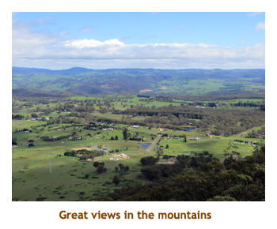
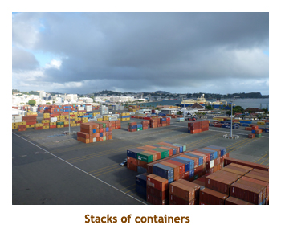

|
Home
Travel
Cruises
Past Cruises (Diaries)
Future Cruises
Rogues Galleries
Land Trips
Diaries (Land Trips)
Hawai'i
- Big Island - 04'01
Hawai'i
- Maui - 05'02
Hawai'i
- Big Island - 04'03
Hawai'i
- Kaua'i - 09'04
Hawai'i
- Big Island - 04'06
Hawai'i
- Maui - 04'06
Mainland China
- 05'07
Phoenix, Arizona
- 12'07
Greek Isles
- 05'08
Hawai'i
- Kaua'i - 09'08
Hawai'i
- Big Island - 09'09
Hawai'i
- Maui - 05'12
Hawai'i
- Big Island - 04'13
Ireland
- 08'13
Mexico
- Cancun 11'13
France/Belgium/Lux 07'15
Hawai'i
- Big Island - 05'17
England
/ Wales - 06'17
Hawai'i
- Big Island - 09'19
Photography
Cameras
Underwater
Pets
Tara
Blackie
Whitey
Muffy
Ollie
Rusty
Fluffy
Rufus&Dufus
Games
Rowing
Physics
|
|
Rating (out of 5):
Ship  Food
Food  Service
Itinerary
Service
Itinerary
Marjorie booked this cruise "last minute", about two months before sailing.
The cruise wasn't selling well, so HAL lowered the prices dramatically to attract
customers. It
was listed as a Travel Agent special at $72 per day for a regular balcony. Just
before sailing we upgraded to a Signature Suite for an additional $8 per day. This
was one of the best deals we have encountered in a long time. The final passenger
count was about 1,775 compared to a double occupancy capacity of 1,916,
so not quite full. About 600 guests were Aussies and there were almost that
many Canucks. There
were only 8 children aboard. The itinerary was
very interesting, hitting many islands that we had not been to before. And, the
cruise was in the right geographical direction so that we could do the dreaded 30
hour transit to Sydney at the start of the trip and have only a one hour flight at the
end of the cruise.
The weather was mixed. We fled from Hurricane Ita as we left Sydney and
had some cloudy / rainy days. But it was lovely and warm, and we did have
lots of sun as well. Because we had planned on snorkeling on most of the islands,
we were less affected by the weather than other types of excursions would be.
Our cabin was lovely. It was essentially a double wide cabin with 2 writing desks,
a large sofa / sitting area and a bathroom with double sinks, a full bath and a separate
shower. For the first week or so we were thrilled by the size of it, but by the end of
the cruise it had become "normal", and the regular sized cabins seemed so small!
We're going to feel really closed in on our next cruise.
I gave the ship only 4 stars because of the layout of the public space. When
we did the Westerdam (identical ship) in 2005, I had noted the wonderful library and
the internet room on deck 3. The library is now a movie theatre and the internet room is
the "Digital Workshop" for computer courses. On deck 10 where the huge Crow's
Nest Lounge used to be, there is a coffee bar, the library, the internet stations, a
liquor bar and a lounge all in the same enclosed space. It was a zoo at times
and very noisy. This was the location of trivia each day which sometimes
conflicted with happy hour - now that was a scramble for seating! Also, the
main theatre was dotted with posts and pillars that obstructed the view from
many of the seats. I can't remember any other ships with this problem.
The main attraction of visiting islands was the snorkeling opportunities.
We took lots of photos of the fish at each stop.
To keep this diary to a reasonable size, I have put most of the fish pictures on a separate page.
*** If you wish to see more fish pictures click here
==> More Fish
***
Pre-cruise (Apr 9 - 11) - A long way to Sydney
We were picked up at our home by the airport shuttle at 2:00 PM. Love those afternoon pickups!
We were at the airport by 2:30 and through security to the waiting room for our 4:15 flight to
Vancouver. We hit YVR at 4:45 (domestic terminal)
and headed out to visit with Jeanne in the international lobby.
However, we took a wrong turn within the secured area and ended up in the international
area. The only way out was to clear through a long line at Canada customs:
"How long have you been out of Canada?"
"Actually we never left ..."
A half hour later we finally
made it to the unsecured side of the international terminal and met Jeanne who
had been patiently waiting for us. We had dinner at Timmy's and
had a nice visit. I don't think that I had seen Jeanne for almost 2 years.
We then had to retransit security for our 8:00 PM
Air New Zealand flight to Auckland. (Marjorie had chosen Air NZ over Air Canada or Qantas because
it was almost half the price!) The flight was long - 13 hours - but we were served two very good meals.
We arrived in Auckland about 5:00 AM after losing a whole day due to the date line. Our final flight to Sydney
was delayed coming in from Shanghai, so we were rescheduled out by 1.5 hours. Finally we left
for Sydney at 8:30 AM. We were served a snack and arrived in Sydney at 11:00 AM. It took almost
an hour to get our bags, go through customs and purchase a shuttle ticket to downtown. We were
at our hotel (the Grace Hotel) by about 12:30 and our room was ready!! Fighting off 30 hours of no sleep,
we wandered the downtown area. Lo and behold we saw the same "rhino art" that we had seen the
previous year in Southampton. Just like the Calgary cows! We ended up at Darling Harbour
and walked along the waterfront area. The sky got quite dark and we had some rain showers for
the rest of the afternoon. The temperature was about 18 degress and would remain at that for our
stay in Sydney. We bought snacks at Woolworths (including
my favorite "bullets") and had an early dinner at the Coronation Hotel.
I had curried lamb but it was ridiculously HOT! Back at the hotel
we took sleeping pills and went to bed at 5:00 PM.
Pre-cruise (Apr 12) - A visit with friends

We woke up in the wee hours of the morning and used the time to do some computer work in the lobby.
For breakfast we wandered down to the Queen Victoria building and found a small deli open that had
large yoghurt parfaits and breakfast wraps. Yummy!
Today we were meeting with our Sydney friends Alan and Glenys for a day at the Blue Mountains. It
was a cloudy day (with a bit of sun later on),
but we didn't mind as we had seen the Blue Mountains several years earlier in the
full sun. A&G drove by the hotel about 9:00 AM while we were outside waiting. The traffic was really thick
in the downtown area. It was Saturday, so there was lots of local traffic in the mountains. However, we
had a wonderful time. We drove by Mt. Wilson, Blackheath, Wentworth Falls, all of which we hadn't seen
before and then to Leura and Katoomba where we had visited before. We stopped for lunch at a
fish & chip place. Returning to Sydney was slow due to the heavy traffic, and we were back at the hotel
by 5:00 PM. It was really nice to see A&G again. They are a wonderful couple who have guided us
around the area twice before on previous trips to Sydney. We walked over to Woolworths to get a
24 pack of Pepsi ($18 - yikes - only $7 at home!) for the cruise. We did some internetting and then
hit the sack at 7:00 PM.
Day 1 (Apr 13) - Boarding in Sydney
We woke up early again, but a little more adjusted. It was muffins and juice for breakfast. We were
hoping tyo be able to cart our bags to Circular Quay (and the cruise terminal building) so did a trial
run to see how easy it would be. It didn't take us too long to walk there and the sidewalks looked fine
for rolling luggage. We were at the cruise terminal about 7:00 AM, just in time to watch the Oosterdam
sail into the harbour from it's previous cruise. We talked to another couple who were doing the same
as us - they were from Nanaimo. A sign had been posted outside of the terminal stating that the ship
would be leaving at 5:30 instead of 7:00 PM. Nice to know! We found out later that this was so that the
ship could outrun an approaching weather system.
It started to rain as we walked back to our hotel and continued to
rain on and off for the rest of the day. Hurricane Ita was just to the north of us and it was affecting the
weather. We walked back to the hotel and did some internetting, then checked out at 11:00.
We retraced
our way back to the terminal dragging our suitcases along the wet pavement. When we got to
the terminal we discovered that they weren't letting anyone in until 12:30. So, we dropped off our
main luggage and headed off through the rain with our carry-ons. We popped in and out of
shops trying to keep dry. At 12:30 we were allowed in. Checkin was very quick. We went straight to
our cabin to drop off our carry-ons as it was ready for us. It was our first view of a Signature Suite
and it was huge (double width). We were really pleased with it. We had a bit of a shock though as
the room was set for two singles rather than a double, and someone else's luggage was in the cabin.
The cabin steward realized the error and soon beds and luggage were corrected.
We went up to the buffet for a quick bite and then back to the cabin to unpack our bags. The
bags had obviously
sat out in the rain and a lot of our clothing was soaked! Our lovely suite shortly became a
laundry room! Afterwards we decided to wander the ship. We were somewhat
familiar with the layout of as the ship as we had done the Westerdam earlier, but some things had
been moved around and my memory isn't the best anyway. Muster was at 5:30 and we eventually
sailed at 6:00. For dinner I had the usual "first dinner" of prime rib. Very good! We went to bed early,
but we had to turn our clocks forward an hour tonight so it didn't seem so unreasonable.
Days 2, 3 (Apr 14, 15) - Two days at sea
After leaving Sydney we spent two days outrunning Hurricane Ita. It caused us grey skies and
some rain. However, the seas weren't too bumpy and there was lots to do inside the ship. The
second day was much warmer as we headed north towards the equator. We were up at 7:00
each morning and enjoyed our breakfast in the main dining room (MDR). One nice thing about
HAL is that they actually encourage table sharing for breakfast and lunch. On other lines we
have begged for a larger table to share and then no one has joined us. The reason might be that
HAL passengers seem to love eating in the MDR and tend to avoid the buffet. We ate with some folks
from Newcastle (Australia) who had been on the Diamond Princess (Sydney to Beijing) with us
but we hadn't met until now. We filled in our sea days with interesting lectures on marine biology and
Windows 8. Marjorie did the port lectures and I went to the gym. We formed a trivia team for the cruise.
The team was fairly diverse and consisted of a couple from
Prince George (Clancy and Jan), Marjorie
and me, a single lady from California (Joan) and a fellow from Australia (Ian).
Although we did win a few sessions over the 29 days,
we seemed to otherwise come in second. On the second
of the sea days we won by a tie breaker. Our first
evening was formal and I had the lamb. We skipped the entertainment (Live Wire) as we had
seen them twice before. The second night served braised short ribs - excellent! The entertainer
was a mentalist who did some interesting mind tricks.
Day 4 (Apr 16) - Noumea, Grand Terre, New Caledonia

We awoke to calm seas and sunny weather. Had we left Ita behind? Because of the captain's
efforts to outrun the storm, we arrived at Noumea at 7:30 AM, well before our planned arrival of 10:00.
Before the cruise we had booked a private snorkel trip at Noumea with AquaNature. The operator usually
did a 1/2 day trip each day at 9:00. Because we were arriving too late for this, the operator had agreed to
run an 11:00 trip. Great! As it turned out, we would have been in plenty of time to catch the 9:00 sailing
which left on time and caught the good morning weather. We had breakfast in the MDR and then packed
for our snorkel trip. We left the ship about 10:00 as we were docked in a container port and had to take a
shuttle just to get out of the port area. Then it was another 15 minutes to walk to the AquaNature hut.
When we showed up at the hut just before 11:00, the wind was picking up and the
usual snorkel sites were starting to get rough weather. So, just to be safe, our snorkel trip was canceled.
Boo!! We walked through the town on the way back to the ship. There wasn't much of interest there and
it was very hot and humid. We were back on the ship by 11:30, so I went up to the gym. We had lunch
at the buffet. When we wandered out to the rear deck area there was a howling wind. We read a bit in
the afternoon and then did trivia at 5:00 - sharing the same space as the happy hour crowd! What a zoo!!
For dinner I had very tasty ginger beef. We skipped the entertainment.
Day 5 (Apr 17) - Easo, Lifou, New Caledonia
We woke up at 6:30 to a hot and sunny day. We ate breakfast in the MDR as
the ship anchored in the harbour. We were at the tiny village of Easo on the small
island of Lifou. There were no excursions offered by HAL at this location.
We delayed leaving the ship to attend a
computer security course, but it turned out the course was mislabled and it was
actually about parental controls. So, we opted out, grabbed our snorkel gear
and tendered to the island, arriving ashore by about 10:30. There was a small
village nearby and the locals had set up a market to sell their handicrafts
near the pier. I had researched the best snorkeling sites on the Web prior
to the cruise and Jinek Bay was quoted as very good and not far from the tender
dock. It is a "park" so the locals charge $15 each to use the bay. We walked
(by road) over a hill and down to Jinek Bay. However, talking to others who
were returning from there, the snorkeling was so-so because it was windy and
rough, and it was low tide giving little clearance over the coral heads. We
walked to the site anyway just to have a look and decided not attempt to snorkel.
Woohoo, we saved $30!! It really was a beautiful little bay with a sturdy
set of steps into the water. If we ever come back we'll try again. We walked
back to the tender port and went snorkeling at the adjacent beach. It was
very shallow (maybe 2 feet in spots), but there were some fish so it was enjoyable.
It was very hot on the beach so we tendered back to the ship about 1:00 for lunch.
We read until 3:30 and then it was time for trivia. For dinner I had roast turkey.
The entertainment was "The Aussie Boys" - a trio of singers who did
mainly Australian songs. They were very good!
Day 6 (Apr 18) - Mystery Island, Vanuatu
We were up at 7:00 on a warm, sunny day. We were coming in to Mystery Island. This is a tiny uninhabited island
off the tip of much larger Tanna Island. It is much like Halfmoon Cay in that apart from a few locals from Tanna, it's
just ship people on the island. The locals have a small market place and provide music and cultural activities.
Strangely, almost the entire "interior" of the island is taken up with an airstrip. Who would fly here? The beach
wraps around the entire island and you can walk the complete circuit in about 45 minutes. As in Lifou yesterday
there were no excursions offered by HAL here. It's just a beach. So, we had breakfast in the MDR and then
tendered to the island to check it out. We walked about 3/4 of the way around the island and found a good snorkeling
area. We decided to cut across the island (about 5 minutes) and tender back to the ship for our snorkel gear. With our gear
in hand we tendered back to the island, cut across to the other side and SNORKELED! (Why didn't we just bring the
gear with us the first time?) It was an excellent snorkel with quite a variety of fish.
After snorkeling we wandered through the market area and then back to the tender slip. There was
quite a lineup to go back, but we all made the next tender. We were back on board by 1:30, just in time for lunch.
At 3:30 it was trivia. We were in good form and won again by a tie breaker. I should mention that both
of the tie breakers that we had won so far were numerical answers where the closest "guess" won. Although our
guesses were miles off, the other teams were even further off. So, it wasn't like we knew the answer!
We headed for dinner at
6:00 and I had the mahimahi. It was very good. The entertainment was a former US Olympic gold
medal gymnast (Lance Ringnald).
I wasn't sure how a gymnast could do a cruise show, but he was excellent. He did some amazing
floor exercises all the while talking about being a gymnast - training, competing, etc. He finished
by doing a routine on the "silks" (the curtains from the ceiling). It really was an interesting show.
Day 7 (Apr 19) - Port Vila, Efate, Vanuatu
We were up at 6:30 and had an early breakfast as we docked at Port Vila. It was sunny and hot in the early morning, but
this was to change to dark and rainy by mid-morning. In the afternoon the sun came out again. We had booked a ship's tour (snorkel trip!) and
met in the theatre for 8:20. We took a bus from the ship into town and to a wharf where our boat awaited. It was a cloudy day
and rained during our snorkel. Despite the weather, the snorkel was quite good. We saw lots of fish. We were
back to the ship by 12 noon. We had lunch in the buffet and then read for a bit. It was quite a hike into the town
area, so we decided not to bother walking back into town.
Trivia was at 3:30. For
dinner I had a tofu stir fry. It was OK, but I guess I really don't care for tofu. At 7:30 we did a computer course on Windows security.
We skipped the entertainment.
Day 8 (Apr 20) - Luganville, Espiritu Santo, Vanuatu
Today we woke up about 6:00 as we sailed toward Luganville. It was going to be a hot, sunny day.
There were only a few excursions offered here and they were quite expensive, so we had decided
to just hang around the ship. We had breakfast in the MDR and then read for a while as the ship
docked. Marjorie headed off to check out the market on the dock area while I went up to the gym.
We had lunch in the buffet. It was very hot and humid so we didn't bother going ashore in the afternoon.
Trivia was at 3:30 and then we did a lecture on Win 8 games at 4:30. For dinner I had roast lamb.
We skipped the entertainment. The clocks went forward an hour tonight.
Day 9 (Apr 21) - At sea
We were up late today, at 8:00, but justified it in that we had lost an hour. It was a sea day as we
left the islands of New Caledonia and Vanuatu behind and sailed towards the islands
of Fiji. We had breakfast in the buffet.
I found the buffet to be a zoo most mornings and lunch so really preferred the MDR. However, if
you wanted to eat quickly, the buffet was the choice. After breakfast we went to a culinary exhibit
and learned how to make cinnamon rolls and emsayadas. At 10:00 there was a port talk on
the Fijiian islands and at 11:00 was a lecture on the recent political history of the various
chains of islands in the South Pacific. We had lunch in the MDR and then went to trivia at 1:00.
Then it was back to school: a 2:00 lecture on HAL's future "exotic" cruises, a 3:00 lecture on coral reefs and
a 4:30 Win 8 lecture on PC setup. Who says there's nothing to do on sea days? For dinner I had
pork picatta on spaghetti. We skipped the entertainment.
Day 10 (Apr 22) - Lautoka, Viti Levu, Fiji
We were up at 7:00 as we arrived in Lautoka. This small city is on the same island (Viti Levu)
as Suva, but on the other side. It was going to be a very hot, humid day.
We had breakfast in the MDR and then headed off for the morning.
We had nothing booked and weren't near a good snorkel spot, so we caught the shuttle bus to
take us out of the container dock and into the town. We walked a kilometer of so to the library to
use their internet, but their computers were down. So, we wandered around the downtown area
until we found an internet site. It was upstairs in a small stuffy room. However, the connection
was good and it only cost us $1 Fijiian (about 50 cents CDN) for an hour. Having done the town, we
shuttled back to the ship for lunch. We ate in the buffet. (The ship only served lunch in the MDR on
sea days, so we had no choice but the buffet on port days). After lunch we read on the balcony.
Our portside cabin always faced into the dock area so we were serenaded by the container moving
equipment. Man it was loud! Trivia was at 3:30 and we won! To celebrate I headed up to the gym
to show off my wonderful prize but no one seemed to care. How insensitive! For dinner I had
Galumpki (Golabki in Polish - cabbage rolls). They were unpronouncable but very good just the same.
We skipped the entertainment.
Day 11 (Apr 23) - Suva, Viti Levu, Fiji
We slept in a bit today, rising about 8:00. We were docking in Suva. It was warm, but cloudy, with
some rain showers throughout the day. We had nothing planned for the day. We had been here several
years ago and walked around the outskirts of the city. It was run down and scary in some areas, so we
didn't plan on going too far this time. We ate breakfast in the MDR
and then walked into town to find an internet connection. We found the library which had internet equipment,
but they only took local currency. So we walked to a large shopping mall and bought a couple cans of
local beer. We paid in Aussie dollars and were rewarded with $3 Fijiian change. Woohoo! We hustled
back to the library and used $1.50 Fijiian for half an hour on the internet. To maximize our foreign currency
we stopped back into the mall to get a $1.30 bottle of water and gave the final $0.20 to a homeless guy
on the sidewalk. Money well spent! Despite passengers having a difficult time bringing wine and
spirits onto ships these days, I had no problem with bringing beer on board (or my two four of Pepsi).
We were back to the ship for lunch in the buffet. We read on our balcony to the tune of the racous
container port. Then it started to pour in rain.
At 2:00 we headed to a games room and played Ticket to Ride (yes, just Marjorie
and I). At 4:30 Marjorie attended a computer class on Win 8 while I popped up to the gym.
For dinner I had lamb chops. Always good! At 9:30 there was a folkloric show of
Fijiian singers and dancers. They were excellent. We sailed at 11:00 PM.
Day 12 (Apr 24) - Dravuni Island, Fiji
Our final stop in Fiji was at Dravuni Island. This island is only slightly
larger than Mystery Island, but actually supports a population of about 200
villagers. It certainly felt like a private island. The ship anchored at 7:00 AM, about a half hour
before we woke up. The forecast was for cloud / rain, but it turned out mostly sunny. We
breakfasted in the MDR, then grabbed our snorkel gear and tendered to the island (about 9:30).
There were no planned excursions on the island, so we just walked along the beach
to where the snorkeling looked good and jumped in. The snorkeling was excellent.
While we were on the beach a supply ship arrived for the village. There were no roads, just
sandy trails, so everything was hand carried from the ship to the village.
It was very hot and humid on the beach so after we warmed up, we headed back onto the ship for lunch.
We ate again in the MDR, really enjoying meeting new people each day. We read for a while and
then headed to 3:30 trivia. Then it was out to wander the deck and take in the view of the island.
For dinner I had pork ribs,. They were very good. The entertainer was an Aussie singer. He was
very good, but we didn't care for the music selections and it was very loud. Tonight
we put our clocks ahead 23 hours (sheesh!) in preparation for crossing the International
Date Line.
Day 13 (Apr 24) - At sea, crossing the Date Line
Sometime during the night we were woken up by a large BUMP as we bounced over
the date line. The captain should have taken it slowly! We woke up at 8:30
(lost an hour) and just like Groundhog Day, it was April 24th all over
again. It was very warm throughout the day, but cloudy and rainy. That's OK
for a sea day. We were too late for the MDR, so ate in the buffet. Afterwards
Marjorie did 2 different cooking shows while I read for a while and then went
to the gym. Hungry again, we ate lunch in the buffet. There was a "fresh cook"
Italian food area that sometimes had Mac&Cheese with a crumb crust - yummy!
Wish they had it every day! Trivia was at 1:00. We stayed and talked with
our team until 3:30. We attended a Win RT lecture at 4:30. Before dinner we
did a walk-around of the top deck. Several of the areas of the deck were empty
of chairs and people. Why was no one there? Very strange. I had prime rib
for dinner. Very tender and tasty. We skipped the entertainment.
Day 14 (Apr 25) - Pago Pago, American Samoa
We had been to Pago Pago (pronounced "Pongo Pongo") before and had done an island tour
so this time had decided to just walk around the town. We were up at 7:00 to a very warm, cloudy, wet day.
We ate breakfast in the buffet. Afterwards, Marjorie headed off to a culinary show on making smoothies
but she was the only one to show up. We docked around 10:00 and went ashore for a reccy. Just
along from the dock we encountered an interesting building owned by the National Marine
Sanctuary of American Samoa. Outside of the building were information tents for each of the
islands making up the sanctuary and they were setting up for a folkloric show. Inside the building
was a natural history museum and gift shop. Marjorie bought herself a t-shirt.
We watched a movie on the reefs and wildlife. It
was very interesting.
We walked on to the library but they didn't have any internet facility. A nearby
building was adorned with a huge Wyland whale painting. On the walk back to the ship
it rained hard, but we had umbrellas and only got our feet wet. As we passed the NMS building
the folkloric shore was proceeding in the rain. We were back onto the ship for a dry towel and lunch.
After lunch we wandered through the souvenir market that had been set up on the dock near the ship.
We bought a couple of Samoan t-shirts. Then we decided to walk in the other direction into town to
find a grocery store. I bought a couple of cans of beer to take aboard. On our walk back to the ship
it poured again so we were soaked by the time we were aboard. I was running out
of dry sandals! Trivia was at 3:30. I had
lasagna for dinner. Very good. Afterwards we tried out the ship's movie theatre and watched "Frozen".
It was a Disney movie and really aimed at children. We
walked the wet decks for a bit and then headed to bed.
Days 15 - 19 (Apr 26 - 30) - Five days at sea, plus the Equator
Today we started our first of two chunks of 5 sea days in a row. We were sailing
from Samoa to Hawai'i and that's a lot of ocean! The weather was mainly
hot and sunny. Our typical sea day was up
by 8:00, breakfast in the MDR, computer classes and destination lectures,
an hour in the gym, lunch in either the MDR or the buffet, trivia, more lectures,
reading and then dinner. Trivia changed a bit for the sea days and, instead
of playing "independent" games each day, we would be accumulating our score
over the next 10 sea days ("progressive" trivia). True to form we seemed to
hit that second place finish each day and by the end of the 5 day block we
were in second place on the halfway scoreboard. We would have to wait until
after Hawai'i to resume the challenge. On the second sea day we crossed the
equator and they had the silly "kiss the fish" Neptune party out on deck.
We also filled in the time playing Ticket to Ride with Ian (from our trivia
team). Dinners were very good featuring lobster thermidor (formal night),
Aussie barbie shrimp, shrimp and scallop linguini, surf & turf and lamb kabobs
(spicy). We rushed dinner one night to see the movie "Gravity", but got our
times mixed up and missed it. We attended one evening show - a lady singer
who did some regular songs and then finished with the most amazing yodeling
I have ever heard! We advanced the clocks one hour on the second evening.
Day 20 (May 1) - Honolulu, Oahu, Hawai'i
Today was a busy day. We were up at 6:30 to a hot sunny day. We ate in the
buffet. Our plan was to rent a car for the day to snorkel, visit Disney and
shop. We had invited our friends Ralph and Shelley to accompany us in the
morning to Hanauma Bay for some snorkeling. We all had to clear US customs
(first US port) and we were done by just after 8:00. We met our friends on
the dock and walked a couple of blocks to the Enterprise Rental place. We
had to wait while they cleaned a car for us and set off by about 9:30. It
was a half hour drive to Hanauma bay and it was quite busy by the time we
got there. Things have really changed since our last visit (1982). Now you
pay for parking ($1.00), park entrance ($7.50 per person) and have to watch
a movie on reef etiquite. We walked down to the bay, beached our stuff and
had a good snorkel. Then it was back up to the car and hustle back to the
ship. We kind of messed up our return route and saw a bit more of Honolulu
than we had planned, but got back to the ship by 12:15. We parked in a parking
compound right by the ship and headed aboard for a quick lunch.
After lunch we returned to our car and headed off to a hotel inspection at the Disney Aulani Resort.
We drove through Honolulu and Pearl City to the Western corner of the island.
There was a lot of traffic so it took us over an hour. We arrived at the resort
at 2:00, right on time. What a beautiful resort! The plan was that Marjorie would meet with other TA's
and do the tour, while I was free to use the facilities - pool and beach. However, as Marjorie was the
only TA to show up, I was invited to tag along. We toured the hotel towers visiting several sizes of rooms.
then we were taken through the outdoor area, restaurants and shops. It was a wonderful hotel complex,
but very expensive. On our way back to the ship we
stopped at the Honolulu Wal-Mart and bought some Pepsi, mac nuts and Maui Brewing Co. Coconut
Porter for the kids. We refueled at a nearby gas station and were back at the rental place by 5:10.
Enterprise had a shuttle back to the ship so it saved us a short walk. For dinner I had a pork chop. It was
good. For some reason there was no trivia today. Unrelated to the lack of trivia,
our friend Clancy had to leave the ship today to fly
back to PG for a court case. Jan stayed on the cruise and Ralph and Shelley filled in for
Clancy for the rest of the trivia sessions. We skipped the entertainment for the evening.
Day 21 (May 2) - Lahaina, Maui, Hawai'i
We were up at 7:00 as we had booked a snorkeling excursion through the ship. We had
breakfast in the buffet and then grabbed our gear for our 8:50 check-in. We tendered
to shore (slowly - due to a congested docking area) and then boarded a Trilogy
catamaran. It was cloudy and a bit rainy, but that was OK. We headed 1 hour south to
Olowalu beach. Along the way they served juices and bread/cakes.
We had done the reef here before from the shoreside, but never from
the deeper side. The snorkeling was excellent and we saw loads of turtles.
On the way back they served wraps, chips, cookies and drinks. As a bonus
we saw a whale in the distance (towards Lanai) and it put on a show of fins
and tail flukes. We were back to the dock by 1:30. Before boarding the tender
US Customs was doing a full scale body and carry-on search of everyone in
the lineup. It really slowed things down and people were quite upset. Just
one of those things!! Tendering back to the ship was slow due to the volume
of boats in the harbour.We read for a bit and then headed to 3:30 trivia.
Progressive trivia was on hold until the next sea day, so this was just
a one-shot trivia. R&S were filling in our vacant spot. The topic was Hawai'i
(all 15 questions!) and we won! For dinner I had lamb Wellington. Excellent!
The entertainment was a lady ventriloquist from Vancouver. She was very good.
Day 22 (May 3) - Nawiliwili, Kauai, Hawai'i
Our final stop in Hawai'i was Kauai - Nawiliwili Harbour to be exact. We had ignored the ship's excursions
and decided to rent a car instead. Marjorie had an appointment booked for a hotel inspection at 12:00 noon.
We were up at 7:30 and had breakfast in the buffet. It was cloudy out, but the sun would break through later.
On the dock we picked up the Budget shuttle and went to get our rental car - a Chevy Cruze. We drove
north to Lydgate Park planning to snorkel there. However, it didn't look that inviting. We talked to some
park volunteers who met weekly to water the lawns, fertilize the plants and clean the beach. Not a bad job!
We headed north again to the Kilauea lighthouse. We were there about 20 minutes before it opened,
so we tried to find our favorite
ice cream shop in the village. It turned out that they had moved to the Safeway mall in Kapa'a. We
went back to the lighthouse and discovered that Saturday, May 3 was a free entrance to the park!
Bonus! We walked around the lighthouse and Marjorie bought a turtle painting in the gift shop.
Driving back to Lihue, we stopped at the Tropical Dreams ice cream shop at 11:45, but it didn't
open until 12:00. We were on a tight schedule (the ship was leaving at 3:00 PM), so no
favorite ice cream! We were at the hotel
by 12:00, but Marjorie had decided not to do a tour but instead just pick up some brochures.
As a reward Marjorie promised me lunch at Costco -a hot dog and a very, berry sundae. We
drove to Costco but the eating area looked suspiciously empty. It turned out that the food area
was closed for the weekend while they installed a new floor. Rats - double whammy! We bought
some mac nuts, filled up with Costco gas and returned to the Budget lot. We caught the next
shuttle to the ship and were on by 1:30. We ate in the buffet. Trivia was at 3:30 and we won again.
Marjorie attended a SkyDrive (OneDrive) course while I read my book. For dinner I had leg of lamb.
The entertainment was a group called "Tribute" who did Temtations songs. No one seemed to
recognize any of the songs other than "My Girl". They weren't very good. The clocks went an
hour ahead tonight as we left the islands of Hawai'i behind.
Days 23 - 27 (May 4 - 8) - Another five days at sea
 This was our second group of 5 sea days in a row as we sailed towards Port
Angeles, Washington. It was lovely and warm in Hawai'i (27 degrees), but the
temperature dropped about 3 or 4 degrees each day as we headed northeast.
Our final day was only 11 degrees. We generally had breakfast and lunch in
the MDR. There were lots of lectures and computer classes to keep us occupied.
One lecture was on the various engines on board to generate electricity for the
propellor motors, to power the cabins, to run the desalination equipment,
etc. Some were gas and some were diesel. I went to the gym each day while
Marjorie did cooking shows or lectures. We got in 3 games of Power Grid with
Ian. And, of course, the progressive trivia carried on from where we had left
off before Hawai'i. By the end of the sea days (10 days in all) we ended a
respectable second place (out of about 25 teams).
There were two formal nights and for dinner I had
rack of lamb, lamb osso buco, surf and turf, lobster tail and meatloaf - all
very good. For evening entertainment we saw a lady from the NY Phantom of
the Opera, Bayne Bacon (excellent singer / comedian / pianist) who we had
seen some years ago, and dancing with the stars. A couple of evenings we played
Sticks with George and Karen (from Cobble Hill!). Twice we had to advance
the clocks one hour. All in all a wonderful 5 days.
This was our second group of 5 sea days in a row as we sailed towards Port
Angeles, Washington. It was lovely and warm in Hawai'i (27 degrees), but the
temperature dropped about 3 or 4 degrees each day as we headed northeast.
Our final day was only 11 degrees. We generally had breakfast and lunch in
the MDR. There were lots of lectures and computer classes to keep us occupied.
One lecture was on the various engines on board to generate electricity for the
propellor motors, to power the cabins, to run the desalination equipment,
etc. Some were gas and some were diesel. I went to the gym each day while
Marjorie did cooking shows or lectures. We got in 3 games of Power Grid with
Ian. And, of course, the progressive trivia carried on from where we had left
off before Hawai'i. By the end of the sea days (10 days in all) we ended a
respectable second place (out of about 25 teams).
There were two formal nights and for dinner I had
rack of lamb, lamb osso buco, surf and turf, lobster tail and meatloaf - all
very good. For evening entertainment we saw a lady from the NY Phantom of
the Opera, Bayne Bacon (excellent singer / comedian / pianist) who we had
seen some years ago, and dancing with the stars. A couple of evenings we played
Sticks with George and Karen (from Cobble Hill!). Twice we had to advance
the clocks one hour. All in all a wonderful 5 days.
Day 28 (May 9) - Port Angeles, Washington, USA
 After 5 days at sea, we were reaching the end of our itinerary. Today we woke
up about 8:00 as we docked in Port Angeles. We had breakfast in the MDR. It
was cool outside - about 9 degrees and cloudy. We read for a while and then
I went to the gym. We had an early lunch
and then headed to our 12:50 bus tour to Hurricane ridge. We drove through
Port Angeles and then headed west into the Olympic Mountains. We climbed to
about 5,000 feet and stopped at the Hurricane ridge visitor center. It was
cloudy (ie. misty) so the views weren't that great. It started to snow and
a number of Aussies on the tour were treated to their first snowfall. The
visitor center was very interesting with a great movie on the natural history
of the area as well as a geological museum. Despite the weather we really
enjoyed our time on the ridge. Marjorie bought a cute stuffed beaver ( I think
for the grand child). On the way back we did a different route to see more
of the town. We were back to the ship by 4:30. A few people disembarked the
ship here. One couple we met from Victoria were sailing home on the Coho.
For dinner I had lamb shank. It was excellent. The entertainment was a "variety"
show featuring the singer and the ventriloquist from previous shows.
After 5 days at sea, we were reaching the end of our itinerary. Today we woke
up about 8:00 as we docked in Port Angeles. We had breakfast in the MDR. It
was cool outside - about 9 degrees and cloudy. We read for a while and then
I went to the gym. We had an early lunch
and then headed to our 12:50 bus tour to Hurricane ridge. We drove through
Port Angeles and then headed west into the Olympic Mountains. We climbed to
about 5,000 feet and stopped at the Hurricane ridge visitor center. It was
cloudy (ie. misty) so the views weren't that great. It started to snow and
a number of Aussies on the tour were treated to their first snowfall. The
visitor center was very interesting with a great movie on the natural history
of the area as well as a geological museum. Despite the weather we really
enjoyed our time on the ridge. Marjorie bought a cute stuffed beaver ( I think
for the grand child). On the way back we did a different route to see more
of the town. We were back to the ship by 4:30. A few people disembarked the
ship here. One couple we met from Victoria were sailing home on the Coho.
For dinner I had lamb shank. It was excellent. The entertainment was a "variety"
show featuring the singer and the ventriloquist from previous shows.
Day 29 (May 10) - Seattle, Washington, USA
Today was our final port day. We had nothing planned for Seattle other than walking
around downtown. We had been to Seattle several times in the past. We were up
about 7:30 and the day was warm with a mix of sun and cloud. We had breakfast
in the MDR. Afterwards we hit the gangplank to visit the city. We walked along
the waterfront, past the aquarium. There was a lot of reconstruction going on along
the docks. We took the stairs up to the Pike Place Market and wandered around the
stalls for a bit. Then we walked over to Westlake Plaza and did a bit of shopping
at Macy's. We stopped at MacDonalds to use the internet and then wandered back
to the ship in the lovely sunshine. There was a marine festival going on near the ship and
there were booths set up advertising different Seattle marine related events. Back on the ship we
had lunch in the buffet. We read, did some packing and then watched the ships in
the harbour from our balcony. The fire boat was showing off and there were tugboat races.
I went to the gym about 4:00. For dinner I had lamb chops.
We skipped the entertainment and spent the time packing our stuff.
Note: The cruise was marketed as both a 29 day to Vancouver and
a 28 day to Seattle. There was also a 1 day cruise from Seattle to Vancouver.
So, about 600 passengers disembarked today and 400 new people came aboard. Some of
the 400 were only on for the overnight, catching a bus back to Seattle tomorrow.
The rest of them were tagging the extra day onto a 7 day Alaska cruise from
Vancouver.
Day 30 (May 11) - Vancouver, B.C., then home
We were up at 6:30 as we arrived in Vancouver. We had booked the "express" departure which meant
we had all our luggage with us and got to leave fairly early. We had a quick breakfast in the buffet. We
grabbed our luggage from the cabin and were off the ship and through Canadian Customs by 8:00. It was
only a short hike from the cruise terminal to the Canada Line train station. We had about a 10 minute wait
for the train and were on our way to the airport. We had an 11:00 AM flight, so were glad that everything
was going smoothly. We were at the airport around 9:00 AM and made it fairly quickly through check-in
and security. Our flight to Calgary was ontime and we arrived at YYC about 1:15. We met Chrissy and Matt
at the carousel. Our luggage came soon and C&M drove us home. We were home by 2:30 and the kitties
were glad to see us. It had been a wonderful cruise but we were glad to be home again.
|